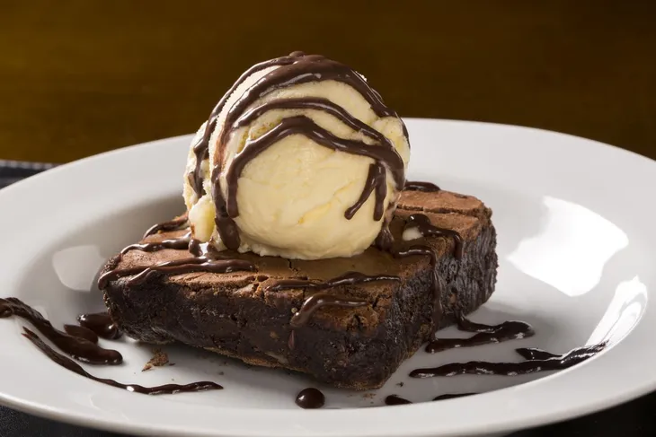

Brownie Recargado
Imagina un brownie esponjoso y húmedo, rico en chocolate oscuro, con un toque de nueces crujientes y trozos de chocolate derretido en cada bocado. Su sabor profundo y decadente se complementa con una capa de caramelo salado en la parte superior, creando una explosión de sabores dulces y salados en tu paladar. Perfecto para acompañar con una bola de helado de vainilla
Indice
Ingredientes
Para un brownie grande
Para la crema
Instrucciones
- En un bol ponemos el chocolate y la mantequilla. Lo metemos al microondas a temperatura media para que se vaya derritiendo. Una vez derretido lo lo mezclamos muy bien.
- Ponemos los 4 huevos y el azúcar en un bol.
- Agregamos la harina y la cucharadita de bicarbonato. Mezclamos muy bien.
- Agregamos el chocolate que hemos derretido junto con la mantequilla y el toque de vainilla. Seguimos mezclando.
- Agregamos las nueces y las pepitas de chocolate.
- En un recipiente de horno ponemos un poco de mantequilla y harina para que no se nos pegue el brownie.
- Incorporamos la mezcla y cubrimos con unas pepitas y unas nueces (opcional). Introducimos al horno durante 30-35 minutos a 180º.